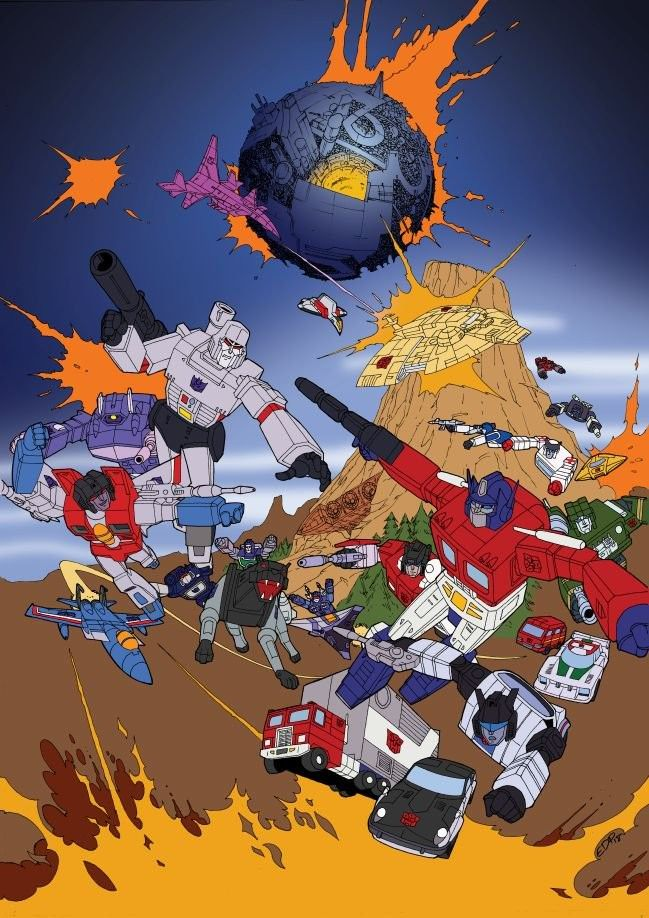

La serie animada de los 80 creó muchos personajes icónicos
La serie original de Transformers emitida en los años 80 no solo popularizó los juguetes, sino que también estableció a muchos de los personajes más recordados de la franquicia. Figuras como Starscream, Soundwave, Grimlock y muchos otros ganaron sus personalidades en la pantalla, gracias a guiones cargados de acción, humor y rivalidades memorables.
Starscream, por ejemplo, se volvió el eterno traidor carismático. Soundwave, con su voz distorsionada y sus cassettes vivientes, se convirtió en un ícono de la tecnología retro-futurista. Grimlock, el líder de los Dinobots, encantó con su brutalidad primitiva y su icónica forma de hablar. Cada personaje tenía una función clara en la narrativa y una personalidad distintiva.
La serie animada fue más que un comercial de juguetes: fue una fuente de mitología. Generó películas, cómics, videojuegos y una cultura de fans que continúa hasta hoy. Su legado sigue presente en cada nueva versión del universo Transformers, recordándonos que las historias que crecen con la imaginación infantil pueden dejar huellas duraderas.
← Volver a curiosidades de Transformers